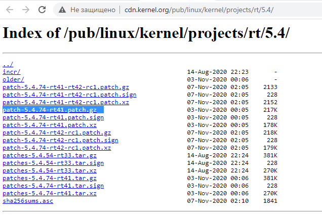

Building a real-time Linux kernel [community-contributed] - tutorial
A real-time Linux kernel can improve scheduling behavior for latency-sensitive ROS systems.
This article explains how to download, patch, configure, build, and install a PREEMPT_RT kernel on Ubuntu.
After you follow it, you can boot into the new kernel and verify that it is running.
This tutorial begins with a clean Ubuntu 20.04.1 install on Intel x86_64. Actual kernel is 5.4.0-54-generic, but we will install the Latest Stable RT_PREEMPT Version. To build the kernel you need at least 30GB free disk space.
Check this wiki for the latest stable version, at the time of writing this is "Latest Stable Version 5.4-rt".
If we click on the link, we get the exact version.
Currently it is patch-5.4.78-rt44.patch.gz.

We create a directory in our home dir with
$ mkdir ~/kernel
and switch into it with
$ cd ~/kernel
We can go with a browser to this page and see if the version is there. You can download it from the site and move it manually from /Downloads to the /kernel folder, or download it using wget by right clicking the link using "copy link location". Example:
$ wget https://mirrors.edge.kernel.org/pub/linux/kernel/v5.x/linux-5.4.78.tar.gz
unpack it with
$ tar -xzf linux-5.4.78.tar.gz
download rt_preempt patch matching the Kernel version we just downloaded over at kernel.org
$ wget http://cdn.kernel.org/pub/linux/kernel/projects/rt/5.4/older/patch-5.4.78-rt44.patch.gz
unpack it with
$ gunzip patch-5.4.78-rt44.patch.gz
Then switch into the linux directory with
$ cd linux-5.4.78/
and patch the kernel with the realtime patch
$ patch -p1 < ../patch-5.4.78-rt44.patch
We simply want to use the config of our Ubuntu installation, so we get the Ubuntu config with
$ cp /boot/config-5.4.0-54-generic .config
Open Software & Updates. in the Ubuntu Software menu tick the 'Source code' box
We need some tools to build kernel, install them with
$ sudo apt-get build-dep linux
$ sudo apt-get install libncurses-dev flex bison openssl libssl-dev dkms libelf-dev libudev-dev libpci-dev libiberty-dev autoconf fakeroot
To enable all Ubuntu configurations, we simply use
$ yes '' | make oldconfig
Then we need to enable rt_preempt in the kernel. We call
$ make menuconfig
and set the following
# Enable CONFIG_PREEMPT_RT
-> General Setup
-> Preemption Model (Fully Preemptible Kernel (Real-Time))
(X) Fully Preemptible Kernel (Real-Time)
# Enable CONFIG_HIGH_RES_TIMERS
-> General setup
-> Timers subsystem
[*] High Resolution Timer Support
# Enable CONFIG_NO_HZ_FULL
-> General setup
-> Timers subsystem
-> Timer tick handling (Full dynticks system (tickless))
(X) Full dynticks system (tickless)
# Set CONFIG_HZ_1000 (note: this is no longer in the General Setup menu, go back twice)
-> Processor type and features
-> Timer frequency (1000 HZ)
(X) 1000 HZ
# Set CPU_FREQ_DEFAULT_GOV_PERFORMANCE [=y]
-> Power management and ACPI options
-> CPU Frequency scaling
-> CPU Frequency scaling (CPU_FREQ [=y])
-> Default CPUFreq governor (<choice> [=y])
(X) performance
Save and exit menuconfig. Now we're going to build the kernel which will take quite some time. (10-30min on a modern cpu)
$ make -j `nproc` deb-pkg
After the build is finished check the deb packages
$ ls ../*deb
../linux-headers-5.4.78-rt41_5.4.78-rt44-1_amd64.deb ../linux-image-5.4.78-rt44-dbg_5.4.78-rt44-1_amd64.deb
../linux-image-5.4.78-rt41_5.4.78-rt44-1_amd64.deb ../linux-libc-dev_5.4.78-rt44-1_amd64.deb
Then we install all kernel deb packages
$ sudo dpkg -i ../*.deb
Now the real time kernel should be installed. Reboot the system:
$ sudo reboot
And check the new kernel version:
$ uname -a
Linux ros2host 5.4.78-rt44 #1 SMP PREEMPT_RT Fri Nov 6 10:37:59 CET 2020 x86_64 xx